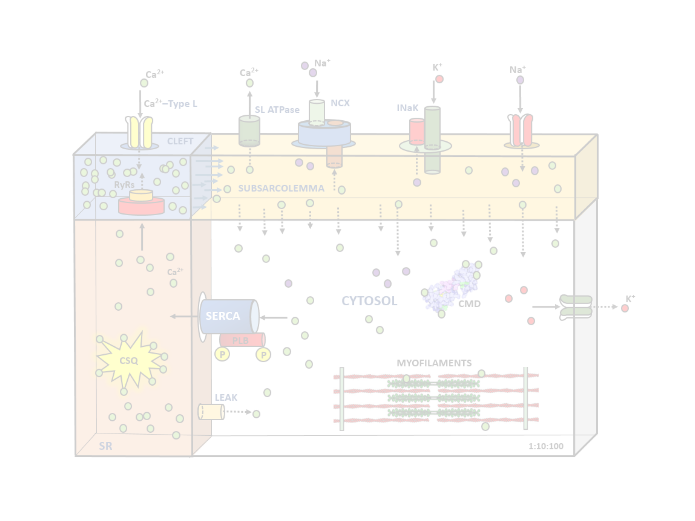
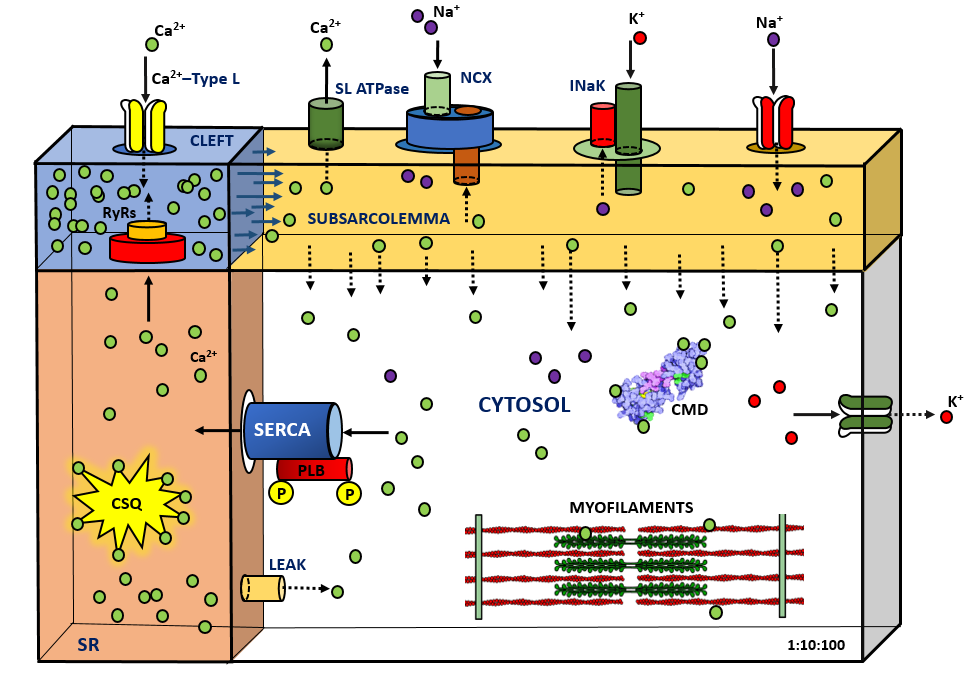

Menu
Cardio Junction: Um modelo de 4 compartimentos para mióito ventricular de rato

Cardio Junction: Um modelo de 4 compartimentos para mióito ventricular de rato
Opções
Close Menu
Home
Parâmetros
Sobre
